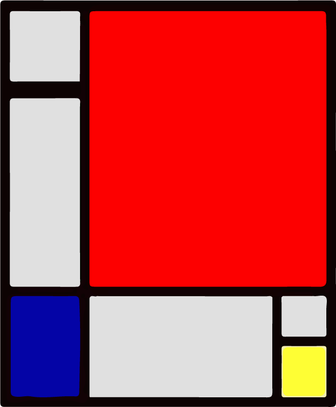
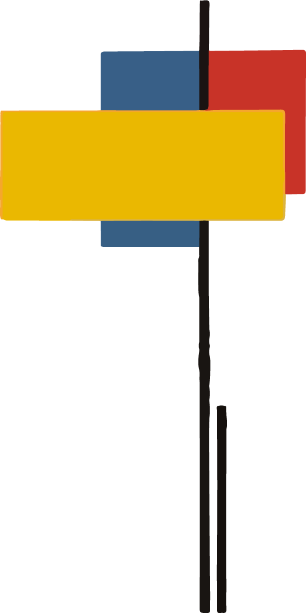

historia
artistas
galería
STIJL
contacto
historia
El neo plasticismo se originó en Holanda, en 1917. Se creó con el objetivo de encontrar la forma maxima de la abstracción de la vida real. Crearon un sistema de simplificación de los elementos, reduciendo todo a lineas y colores. Este movimiento estuvo estrechamente unido a una corriente más extensa, llamada
De STIJL


El neoplasticismo fue parte de las vanguardias históricas, un grupo de corrientes artísticas que buscaron romper con las tradiciones estéticas anteriores, y estuvo estrechamente vinculado con el constructivismo ruso y el abstraccionismo. Además, compartió elementos estéticos con el cubismo y el futurismo, aunque desde bases teóricas muy diferentes.